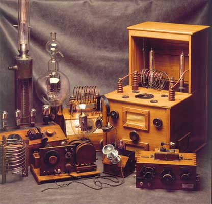
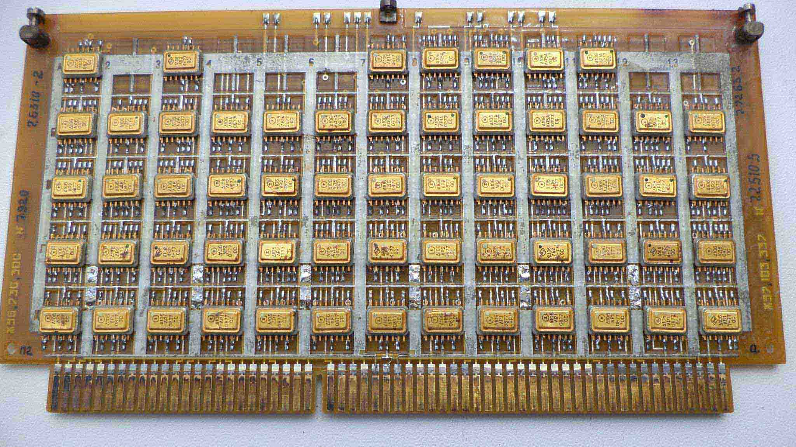
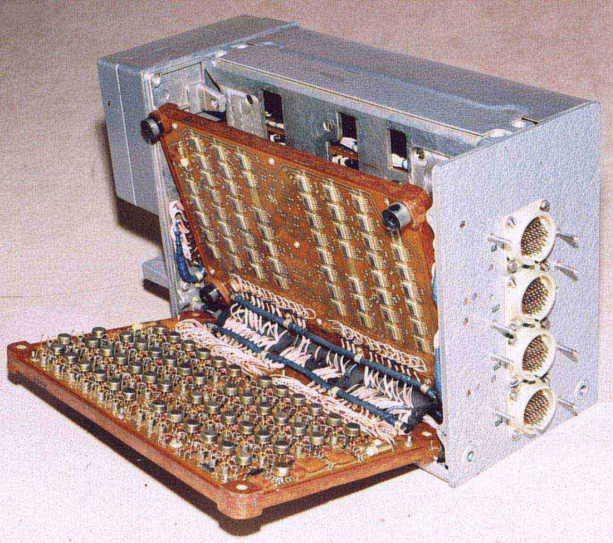
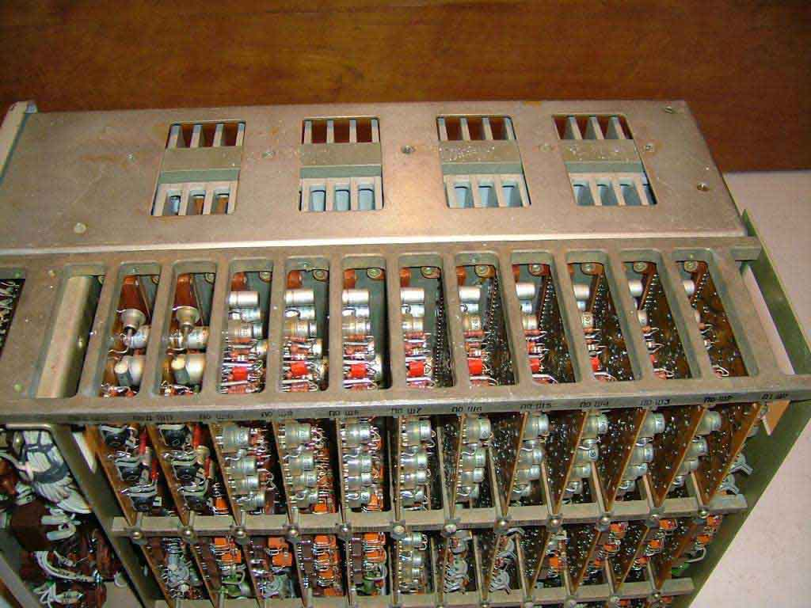
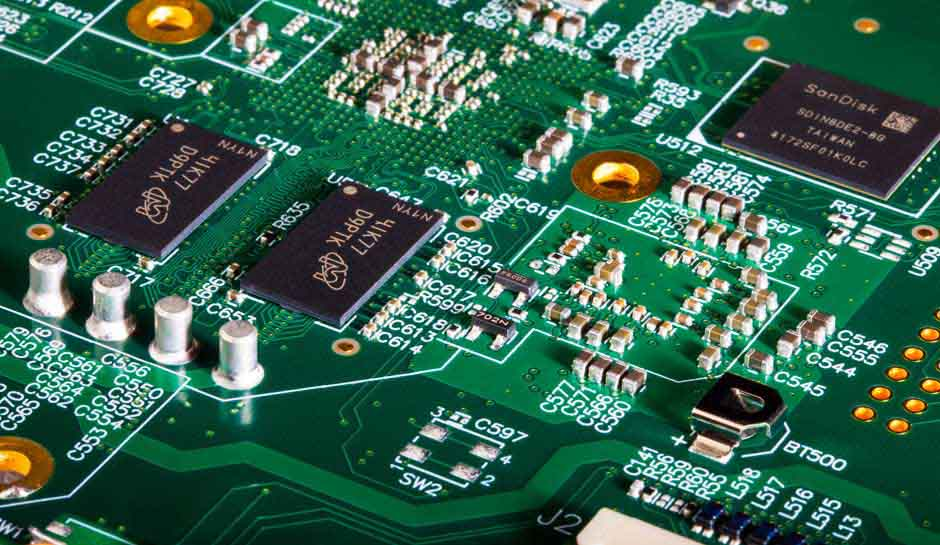
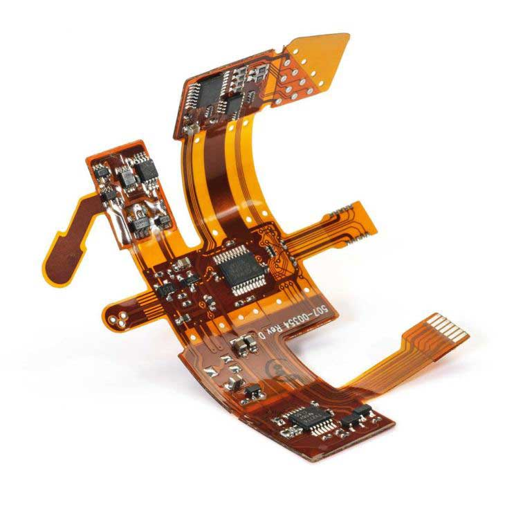

Радиоэлектронные средства — совокупность электронных средств, чьи основы базируются на правилах и принципах радиоэлектроники, которым присущи методы и средства преобразования электрических импульсов, содержащих информацию, с использованием энергии электромагнитного поля в пространстве и каналов связи в электронной сети. По классификации РЭС укрупненно подразделяют на:
- Радиовещание и телевидение;
- Радиоуправление и радиотелеметрию;
- Радиолокацию и радионавигацию;
- Радиоизмерительную обработку информации (запись/воспроизведение).
По объекту установки РЭС разделяют на три категории:
- Бортовые;
- Наземные;
- Морские.
По параметрам и диапазону частот РЭС делятся на:
- Аналоговые;
- Цифровые;
- Сверхвысоких частотах.
Конструкция радиоэлектронных средства — объемно упорядоченная структура или количество компонентов, между которыми осуществляется электрическая, механическая, магнитная, электромагнитная и другие связи, обеспечивающие заданные изменения и обработку сигналов при наличии воздействий внешней среды. Процесс конструирования средств — это процесс создания креативных устройств или радиоаппаратуры, финальным результатом которого является выполнение полного набора конструкторской и технологической документации, чертежей, 3D моделей, трассированных печатных плат для дальнейшего промышленного производства. Проектирование и моделирование радиоаппаратуры совпало с появлением радиотехники. Существуют несколько технических критериев для перехода от одного этапа к другому:
- Миниатюризация элементной базы при конструировании РЭА;
- Стремление к повышению надежности ЭРЭ;
- Уменьшение массы и объема электромонтажа;
- Единообразие и стандартизация функциональных деталей и блоков;
- Внедрение автоматизации в разработку конструкций РЭС;
- Непрерывный рост интеграции конструкций как за счет интеграции элементной базы, так и благодаря новым методам компоновки;
- Внедрение элементов и узлов функциональной электроники.
История развития аппаратуры насчитывает несколько этапов, каждый из которых отличался уровнями видоизменения количественной насыщенности и элементной базы. Доподлинно известно о существовании пяти временных интервалов развития радиотехники.
Первый этап (1914-1950 гг.). Характерной особенностью данного периода является использование в производстве электротехники вакуумных приборов. В изделиях принципиально происходило отделение входной и выходной цепи, выполнение защиты магнитных и электромагнитных излучающих компонентов, отсутствие экранирования, у которых, приведёт к появлению отклонений и наводок.
Ламповое радиооборудование 1922 года
В проектируемых устройствах имеет значение металлизация шин с обеспечением высокой проводимости. Вместо механических сопряжений (винты, болты, шпильки) впервые стали применять пайку, соединение элементов производилось с помощью жгутов, отрабатывались технологии печатного монтажа. Применение систем на открытом воздухе требует соблюдение правил по защите от климатических, механических и других воздействий.
Ламповая техника постоянно видоизменялась: лампы стеклянной и металлической серий, пальчиковые лампы м т.д. Постепенно с усложнением радиоэлектроники возникла необходимость в новых установках крупносерийного производства, например, возникла целесообразность деления большой сборки на более мелкие части и введения типизации этих составных частей. Всё это позволило облегчить сборочно-слесарные, монтажные и наладочные работы, уменьшить стоимость производства и труда.
Второй этап (1950-1965 гг.). На данном шаге развития радиотехники происходит массовое использование в схемотехнике элементов: стабилитронов, транзисторов, дросселей. При росте концентрации в печатном узле резко возросла потребность в многократном уменьшении габаритов и значительном снижение питания у элементов. Далее возникла необходимость в печатных платах, как базовой подложки для радиоэлементов, которые будут использоваться во многих отраслях и устройствах от космической до морской. Это усложнение задаёт и новые повышенные требования как психологические, так и физиологические от инженера разработчика. Зарождающая автоматизация и медленное снижение себестоимости РЭС привело к закономерному росту реализации бытовой аппаратуры.
Печатная плата РЭС 1955 года
Доступность техники привело к тому, что теперь почти в каждом доме или квартире появляются телевизоры, радиоприемники, магнитофоны. Флагманами данного периода стали эргономика и промышленная эстетика. Но полностью ламповую технику не удалось заместить, они продолжают использоваться в мощных радиопередающих устройствах, лампах обратной волны.
Третий этап (1965-1980 гг.). В 80-х годах происходит развитие новой, доселе неизвестной, технологии изготовления гибридных интегральных микросхем и полупроводников. Плотность монтажа и функциональная кучность вновь увеличилась. Существенная победа произошла в области индикации. Появились полупроводниковые элементы с электронно-дырочным переходом и символьные индикаторы различного вида на их основе, а также ЭЛИ. Проектировщики получили уникальный шанс значительно усовершенствовать дизайн лицевых панелей и изделий.
Блок книжной конструкции на ИМС 1980 года
Появившиеся микросхемы, поставлялись в железных, пластиковых и металлокерамических корпусах разных форм, преимущественно используются для сквозного монтажа. Число выводов не превышало суммарно 8 пар, их ставили на печатную плату группами и отрабатывалась тем самым новая технология печатного монтажа. Применение микросхем, производство которых неотъемлемо связано с получением целого набора элементов на подложке или в объеме кристалла, позволяет резко повысить время эксплуатации.
Четвёртый этап (1980-1997 гг.). Особенности функционального построения на данном временном отрезке охарактеризовалась постепенным переходом от аналоговой элементной базы к цифровой, что логично привело к возникновению новых стандартов и правил конструирования радиоэлектронной аппаратуры. Стали массово внедряться САПР, такие как Компас, SolidWorks, AutoCAD, P-CAD, AltiumDesigner, которые решали успешно поставленные задачи: компоновка, 3D-моделирование, расчет и макетирование тепловых режимов в небольших объёмах, были предприняты первые шаги по улучшению электромагнитной совместимости.
Моноблочный прибор 1995 года
Помимо массового внедрения корпусов интегральных микросхем на печатных платах, параллельно шла разработка и изготовление первых бес корпусных ИС и их размещение на большие подложки, инженеры получили первые образцы больших гибридных интегральных схем (БИС), а следом и сверхбольших интегральных схем (СБИС), функциональные компоненты или микросборки (МСБ). Преимуществами этого этапа по сравнению с предшественниками, заключается в: значительном уменьшении массы компонуемых устройств, повышенной надёжностью, сокращение числа паек, увеличение вибропрочности и прочности на удары.
Пятый этап (1997-по н. вр.). Сегодня вся радиоэлектронная аппаратура сложная и комбинированная, существуют пары: ВЧ и НЧ, СВЧ блоки и цифровые блоки. Отличительной чертой данного этапа является массовое внедрение микросхем сверхвысокой степени интеграции и использование цифровых методов обработки сигналов с передачей огромных массивов данных.
Многослойная плата РЭС 2020 года
При этом общее количество самих эрэ увеличивается, чего требуют новые поставленные задачи, такие как перевод сигнала в цифру, использование в межблочной коммутации гибких плат из полиимидной плёнки, идёт дальнейшая миниатюризация элементной базы, появляются обвязки (генераторы тактовые, модули памяти и т.д.) это существенно изменяет внешний вид и дизайн современной аппаратуры.
Гибкая печатная плата РЭС 2020 года
Рынок труда электроники требует от инженера-конструктора и разработчика схем электрических принципиальных больших знаний, опыта и принятие гибких схемотехнических решений в проектировании техники, а также знание эргономики, промышленной эстетики и надежности
Для заказа на разработку конструкторской документации, чертежей, оцифровки эскизов на разные электронные устройства обращайтесь сюда.
Быстрое и качественное исполнение вам будет гарантировано!